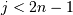
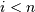
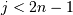
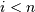
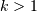
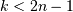
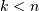
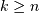

scipy.cluster.hierarchy.dendrogram¶
- scipy.cluster.hierarchy.dendrogram(Z, p=30, truncate_mode=None, color_threshold=None, get_leaves=True, orientation='top', labels=None, count_sort=False, distance_sort=False, show_leaf_counts=True, no_plot=False, no_labels=False, color_list=None, leaf_font_size=None, leaf_rotation=None, leaf_label_func=None, no_leaves=False, show_contracted=False, link_color_func=None)[source]¶
Plots the hierarchical clustering as a dendrogram.
The dendrogram illustrates how each cluster is composed by drawing a U-shaped link between a non-singleton cluster and its children. The height of the top of the U-link is the distance between its children clusters. It is also the cophenetic distance between original observations in the two children clusters. It is expected that the distances in Z[:,2] be monotonic, otherwise crossings appear in the dendrogram.
Parameters : Z : ndarray
The linkage matrix encoding the hierarchical clustering to render as a dendrogram. See the linkage function for more information on the format of Z.
p : int, optional
The p parameter for truncate_mode.
truncate_mode : str, optional
The dendrogram can be hard to read when the original observation matrix from which the linkage is derived is large. Truncation is used to condense the dendrogram. There are several modes:
None/’none’: no truncation is performed (Default)
- ‘lastp’: the last p non-singleton formed in the linkage
are the only non-leaf nodes in the linkage; they correspond to to rows Z[n-p-2:end] in Z. All other non-singleton clusters are contracted into leaf nodes.
- ‘mlab’: This corresponds to MATLAB(TM) behavior. (not
implemented yet)
- ‘level’/’mtica’: no more than p levels of the
dendrogram tree are displayed. This corresponds to Mathematica(TM) behavior.
color_threshold : double, optional
For brevity, let
 be the color_threshold.
Colors all the descendent links below a cluster node
be the color_threshold.
Colors all the descendent links below a cluster node
 the same color if is the first node below
the cut threshold . All links connecting nodes with
distances greater than or equal to the threshold are colored
blue. If is less than or equal to zero, all nodes
are colored blue. If color_threshold is None or
‘default’, corresponding with MATLAB(TM) behavior, the
threshold is set to 0.7*max(Z[:,2]).
the same color if is the first node below
the cut threshold . All links connecting nodes with
distances greater than or equal to the threshold are colored
blue. If is less than or equal to zero, all nodes
are colored blue. If color_threshold is None or
‘default’, corresponding with MATLAB(TM) behavior, the
threshold is set to 0.7*max(Z[:,2]).get_leaves : bool, optional
Includes a list R['leaves']=H in the result dictionary. For each
 , H[i] == j, cluster node
j appears in position i in the left-to-right traversal
of the leaves, where  and .
, H[i] == j, cluster node
j appears in position i in the left-to-right traversal
of the leaves, where  and .orientation : str, optional
The direction to plot the dendrogram, which can be any of the following strings:
- ‘top’ plots the root at the top, and plot descendent
links going downwards. (default).
- ‘bottom’- plots the root at the bottom, and plot descendent
links going upwards.
- ‘left’- plots the root at the left, and plot descendent
links going right.
- ‘right’- plots the root at the right, and plot descendent
links going left.
labels : ndarray, optional
By default labels is None so the index of the original observation is used to label the leaf nodes. Otherwise, this is an
 -sized list (or tuple). The
labels[i] value is the text to put under the th
leaf node only if it corresponds to an original observation
and not a non-singleton cluster.
-sized list (or tuple). The
labels[i] value is the text to put under the th
leaf node only if it corresponds to an original observation
and not a non-singleton cluster.count_sort : str or bool, optional
For each node n, the order (visually, from left-to-right) n’s two descendent links are plotted is determined by this parameter, which can be any of the following values:
False: nothing is done.
- ‘ascending’/True: the child with the minimum number of
original objects in its cluster is plotted first.
- ‘descendent’: the child with the maximum number of
original objects in its cluster is plotted first.
Note distance_sort and count_sort cannot both be True.
distance_sort : str or bool, optional
For each node n, the order (visually, from left-to-right) n’s two descendent links are plotted is determined by this parameter, which can be any of the following values:
False: nothing is done.
- ‘ascending’/True: the child with the minimum distance
between its direct descendents is plotted first.
- ‘descending’: the child with the maximum distance
between its direct descendents is plotted first.
Note distance_sort and count_sort cannot both be True.
show_leaf_counts : bool, optional
When True, leaf nodes representing  original observation are labeled with the number of observations they contain in parentheses.
no_plot : bool, optional
When True, the final rendering is not performed. This is useful if only the data structures computed for the rendering are needed or if matplotlib is not available.
no_labels : bool, optional
When True, no labels appear next to the leaf nodes in the rendering of the dendrogram.
leaf_label_rotation : double, optional
Specifies the angle (in degrees) to rotate the leaf labels. When unspecified, the rotation based on the number of nodes in the dendrogram. (Default=0)
leaf_font_size : int, optional
Specifies the font size (in points) of the leaf labels. When unspecified, the size based on the number of nodes in the dendrogram.
leaf_label_func : lambda or function, optional
When leaf_label_func is a callable function, for each leaf with cluster index . The function is expected to return a string with the label for the leaf.
Indices  correspond to original observations while indices  correspond to non-singleton clusters.
For example, to label singletons with their node id and non-singletons with their id, count, and inconsistency coefficient, simply do:
>>> # First define the leaf label function. >>> def llf(id): ... if id < n: ... return str(id) ... else: >>> return '[%d %d %1.2f]' % (id, count, R[n-id,3]) >>> >>> # The text for the leaf nodes is going to be big so force >>> # a rotation of 90 degrees. >>> dendrogram(Z, leaf_label_func=llf, leaf_rotation=90)
show_contracted : bool
When True the heights of non-singleton nodes contracted into a leaf node are plotted as crosses along the link connecting that leaf node. This really is only useful when truncation is used (see truncate_mode parameter).
link_color_func : lambda/function
When a callable function, link_color_function is called with each non-singleton id corresponding to each U-shaped link it will paint. The function is expected to return the color to paint the link, encoded as a matplotlib color string code. For example:
>>> dendrogram(Z, link_color_func=lambda k: colors[k])
colors the direct links below each untruncated non-singleton node k using colors[k].
Returns : R : dict
A dictionary of data structures computed to render the dendrogram. Its has the following keys:
- ‘icoords’: a list of lists [I1, I2, ..., Ip] where
Ik is a list of 4 independent variable coordinates corresponding to the line that represents the k’th link painted.
- ‘dcoords’: a list of lists [I2, I2, ..., Ip] where
Ik is a list of 4 independent variable coordinates corresponding to the line that represents the k’th link painted.
‘ivl’: a list of labels corresponding to the leaf nodes.
- ‘leaves’: for each i, H[i] == j, cluster node
j appears in position i in the left-to-right traversal of the leaves, where and . If j is less than n, the i th leaf node corresponds to an original observation. Otherwise, it corresponds to a non-singleton cluster.